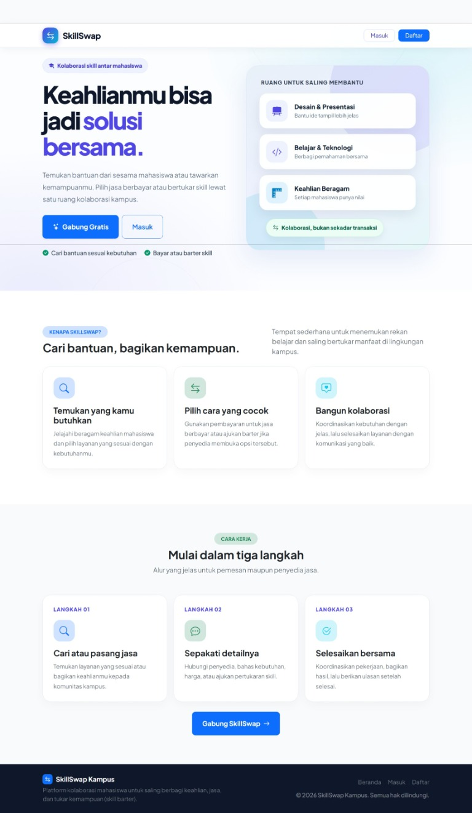
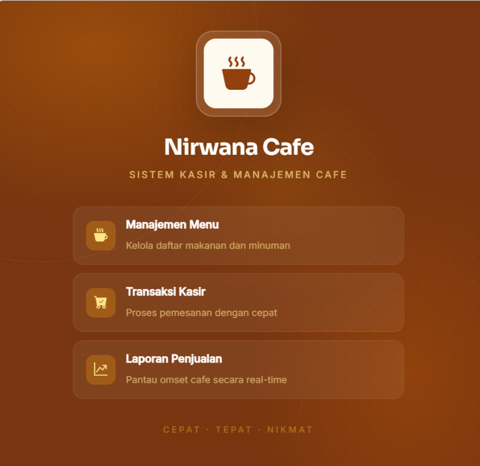
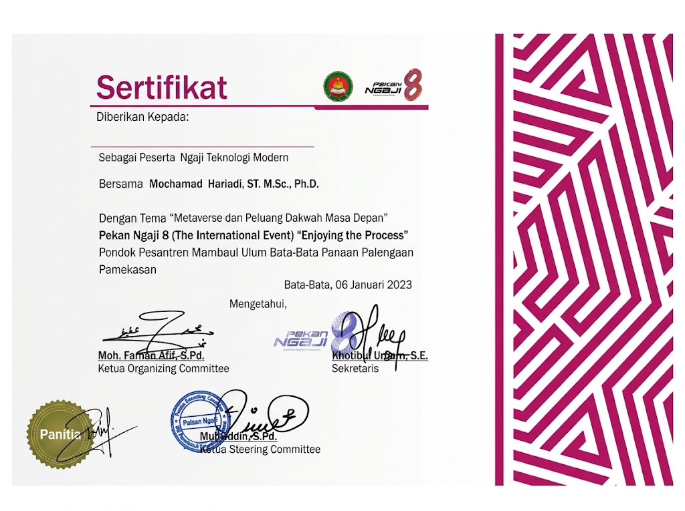
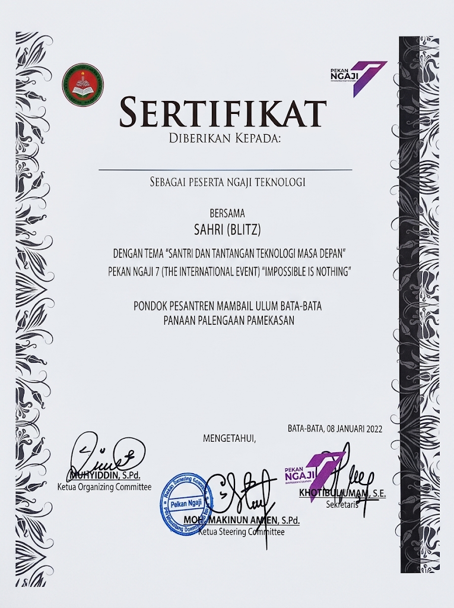

PENDIDIKAN SAAT INI
Mahasiswa Semester 5
Perguruan Tinggi: Universitas Annuqayah, Sumenep, Jawa Timur
Program Studi: Teknologi Informasi
Fakultas: Teknik dan Transformasi Digital
MAHASISWA · UI/UX DESIGN · WEB DEVELOPMENT
Tertarik merancang pengalaman digital yang nyaman, membangun web, dan mengeksplorasi teknologi computer vision.
Jelajahi karya01 / PERKENALAN
Saya adalah mahasiswa yang memiliki minat pada desain antarmuka (UI/UX), pengembangan aplikasi web, dan pengolahan citra digital menggunakan Python.
Saya senang mempelajari hal baru dan mengubahnya menjadi solusi digital yang fungsional serta mudah digunakan.
Mari terhubung02 / PENDIDIKAN
Perjalanan pendidikan saya saat ini.
PENDIDIKAN SAAT INI
Perguruan Tinggi: Universitas Annuqayah, Sumenep, Jawa Timur
Program Studi: Teknologi Informasi
Fakultas: Teknik dan Transformasi Digital
03 / YANG SAYA PELAJARI
Teknologi dan bidang yang sedang saya kembangkan.
Membangun website responsif dengan fondasi web modern.
Merancang antarmuka digital yang jelas, nyaman, dan mudah digunakan.
04 / PILIHAN KARYA
Beberapa proyek dan eksplorasi selama proses belajar.

PLATFORM DIGITAL
Platform pertukaran keterampilan agar pengguna dapat saling berbagi dan belajar.
Lihat tampilan
SISTEM KASIR
Sistem kasir untuk membantu pencatatan transaksi dan operasional kafe.
Lihat tampilan05 / PENCAPAIAN
Dokumentasi kegiatan dan pembelajaran yang pernah saya ikuti.


06 / TERHUBUNG